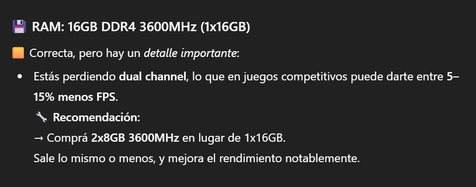
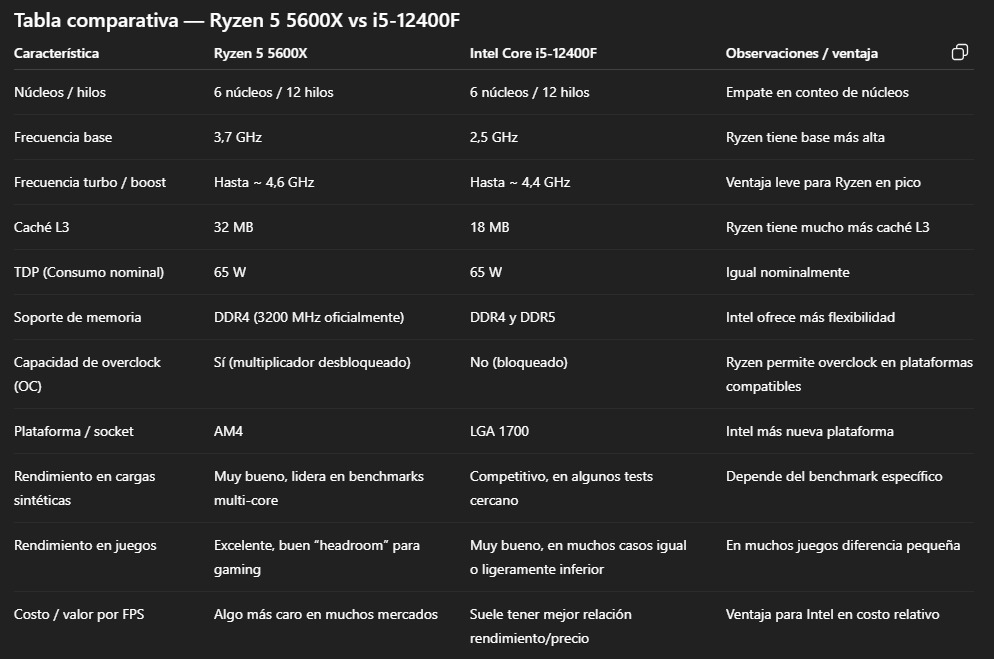
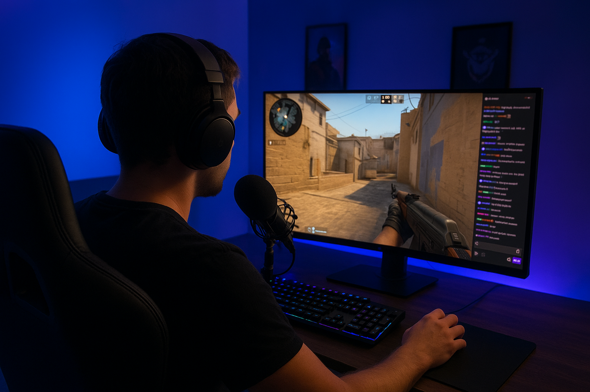
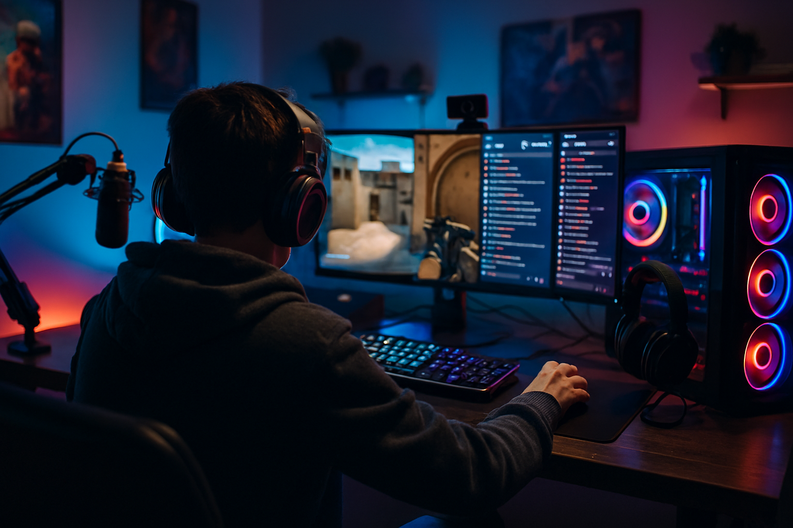

{kind=link}
{kind=link}
{kind=link}

El streaming de videojuegos pasó de ser un hobby de nicho a una industria con miles de millones
de dólares.
En 2024 se vieron más de 32,5 mil millones de horas de directos (+12% interanual), y el mercado
global de game streaming fue valuado en ~USD 9,8 mil millones en 2023 con proyección de crecimiento
sostenido hacia 2030.
Plataformas como Twitch y YouTube permiten que cualquier jugador transmita en vivo, interactúe con
su audiencia y construya comunidad, pero para hacerlo con calidad estable se necesita entender el
hardware y el software involucrados.
Transmitir o hacer directo no solo implica ejecutar el juego, tambien implica capturar imagen/sonido y codificar el video en tiempo real.
Hoy los codificadores de hardware (NVENC en NVIDIA, AMF en AMD, Quick Sync en Intel) reducen el
trabajo del CPU y logran buena calidad con poco impacto en el rendimiento del juego usando o esforzando un poco mas nuestra grafica.
Por otr lado OBS Studio es estándar abierto y gratuito soporta una amplia variedad de codificadores además de x264 por software que utilizaria mas la CPU.
En cuanto a calidad de emisión, los bitrates recomendados orientan el objetivo de red y equipo:
• En YouTube se sugieren 6 Mbps para 720p60 y 10–12 Mbps para 1080p60.
• En Twitch, su límite práctico estandar ronda los 6 Mbps para 1080p60 y 3–4,5 Mbps para 720p60.
Estos numeros ayudan a pensar cuanta CPU/GPU, memoria, almacenamiento y conexión de
subida se necesita.
En este trabajo definiremos una configuración capaz de ejecutar el juego elegido con buen rendimiento y transmitir al menos en 6 bitrates 1080p30 pero idealmente en 1080p60 12 bitrates, respetando un presupuesto máximo de USD 1000 justificando cada decisión y analizando los precios de tiendas.
Counter-Strike 2 es la version más reciente del famoso Counter-Strike: Global Offensive desarrollado por Valve usando el motor Source 2.
Lanzado en septiembre de 2023, trae mejoras gráficas, físicas del humo, una nueva arquitectura de servidor y un enfoque competitivo más moderno. Sin embargo, dejó de ser compatible con macOS, DirectX 9 y sistemas de 32 bits.
Soporta únicamente Windows y Linux de 64 bits.
Esto mejora el realismo y la jugabilidad, pero también exige más del hardware. Aun así, los requerimientos mínimos siguen siendo accesibles, lo que permite que muchos rigs de la última década corran el juego con fluidez.
Los requerimientos del sistema son una guía básica para saber si un juego puede ejecutarse en una PC.
Sin embargo, los mínimos suelen ser engañosos: permiten abrir el juego, pero no garantizan un rendimiento fluido.
En títulos competitivos como CS2, cumplir solo con lo mínimo rara vez alcanza para jugar a 60 FPS estables.
Por eso, los recomendados son la referencia real para tener una buena experiencia.
Mínimos (según Steam, distribuidor de Counter-Strike 2):
• Sistema operativo: Windows 10 (o similar en Linux)
• Procesador: 4 hilos reales (ej. Intel Core i5-750 o superior)
• Memoria RAM: 8 GB
• Gráficos: GPU compatible con DirectX 11 y Shader Model 5.0, con al menos 1 GB VRAM
• Almacenamiento: ~85 GB disponibles (más si se usan mapas del Workshop)
Recomendados (basado en análisis de fuentes especializadas):
• OS: Windows 10 o 11 64-bit
• CPU: Intel Core i5-7500 o Ryzen 5 1600 (mínimo); idealmente Core i7-9700 o Ryzen 7 2700X
• RAM: 16 GB
• GPU: GTX 1060 o RX 580 (mínimo recomendado); para mayor rendimiento: RTX 2070 o Radeon RX 5700 XT
• Storage: ~60 GB (aunque Steam indica 85 GB)
Además del hardware recomendado, para lograr un buen streaming se requiere otros elementos para lograr la mejor calidad y profesionalismo en el caso de vivir del streaming:
Para hacer el análisis mas completo, además de Counter-Strike 2, nos enfocamos en evaluar brevemente otros juegos multijugador muy famosos en el mundo del gaming/streaming:
Conclusión:
Si bien Valorant es la alternativa más accesible y Fortnite ofrece un atractivo masivo,
elegimos Counter-Strike 2 porque representa un equilibrio ideal: es uno de los
juegos de esports más relevantes, con una exigencia técnica intermedia y gran impacto
en la escena competitiva y en plataformas de streaming.
Para poder jugar Counter-Strike 2 y transmitir en vivo con buena calidad, armamos una computadora que se mantiene dentro del presupuesto máximo de ~USD 1200. La idea fue elegir cada componente equilibrando precio, rendimiento y confiabilidad, asegurando que la PC no solo rinda hoy, sino que también permita mejoras futuras.
Análisis rendimiento:
La configuración cumple con los objetivos del trabajo práctico: ejecutar CS2 con más de 144 FPS en 1080p, realizar streaming fluido en 1080p60 usando NVENC y mantenerse dentro del presupuesto establecido. Además, brinda la posibilidad de upgrades en memoria, almacenamiento o GPU sin necesidad de reemplazar la plataforma base.
Conversación con ChatGPT:
Verificando con la inteligencia artificial si mi elección de componentes y periféricos estaba bien, me comentó lo siguiente:

Aunque tiene razón en que no se activaría el dual-channel, ya mencioné anteriormente en el análisis de rendimiento que esto se puede solucionar en el futuro agregando otro módulo igual de memoria y velocidad.
Tabla comparativa (Ryzen 5 5600X vs i5-12400F):
Decidí comparar dos procesadores comunes en computadoras de este presupuesto:

En NanoReview se comparan ambos procesadores. Aunque Ryzen tiene ventaja en tests sintéticos, en rendimiento real las diferencias no siempre son grandes.
En Technical.city mencionan que el Ryzen 5 5600X supera al i5-12400F en ~12 % en ciertas mediciones agregadas.
En UserBenchmark se muestran diferencias, pero no abismales.
En base a esto, elijo el Ryzen 5 5600X, ya que entra en nuestro presupuesto, ofrece mejor rendimiento en algunas aplicaciones y permite overclock. Además, las placas AM4 suelen tener precios más competitivos y ofrecen opciones de upgrade a futuro.
Explicación técnica Bitrate:
Pregunté a la IA: "¿Qué es el bitrate, para qué sirve en el streaming y por qué más es mejor?" Su respuesta fue:
Factores que influyen en el bitrate: resolución, FPS, velocidad de subida y códec usado (H.264, H.265, AV1). Más bitrate significa mejor calidad, pero si tu internet no lo soporta puede causar lag o cortes.
Ejemplo: si tu subida es de 8 Mbps, no deberías usar más de ~6 Mbps de bitrate para dejar margen al audio y otros procesos.
En resumen, lo que explica la inteligencia artifical es que el bitrate determina cuánta información de video y audio se envía cada segundo durante el stream.
La siguiente configuración fue seleccionada con un presupuesto cercano a ~USD 1000. Está pensada para lograr estabilidad de FPS en CS2 y streaming fluido en 1080p60. Se priorizó el equilibrio entre costo y prestaciones, usando piezas confiables y con posibilidad de futuras actualizaciones.
Conclusión:
La PC propuesta permite jugar Counter-Strike 2 en calidad alta con más de
144 FPS en 1080p, mientras se transmite en 1080p60 de forma fluida gracias
a la combinación del Ryzen 5 5500 y la RX 6600. Además, queda margen de mejora en RAM, almacenamiento o GPU sin necesidad de cambiar la plataforma base.
La configuración que yo personalmente investigue pagina por pagina y elegi finalmente fue seleccionada considerando un presupuesto de ~USD1200, con la idea poder jugar competitivamente Counter-Strike 2 con más de 144 FPS estables y transmitir en 1080p60 mediante OBS Studio. Busque garantizar la relación precio/calidad y la posibilidad de upgrades en mi caso mas de (RAM, CPU).
Totales y notas:
- Total (componentes 1.120.615 ARS (equivalente en dolares: $766.51USD).
- Suma periféricos añadidos (mouse + auriculares + teclado estimado): 39.865 + 91.699 + 87000 = $218.564 ARS
- Total final (componentes + periféricos):1.339.179 ARS ≈ 915.94 USD
Elegi los componentes de acuerdo a opiniones propias e investigaciones por paginas web, buscando un buen rendimiento y una buena calidad de video, que se pueda transmitir y respetando al presupuesto seleccionado pasamelo a html haceme solo esto pero con el estilo del formato que te pase recien.
AMD Ryzen 5 5600X – 6 núcleos / 12 hilos – Boost 4.6 GHz
Precio: AR$ 221.269 – Link Venex
Justificación: Excelente relación precio/rendimiento. Ofrece potencia suficiente para CS2 y transmisión simultánea en OBS. Se descartó el Ryzen 5 5500 por menor IPC.
MSI B550M-A PRO – Chipset B550 – AM4
Precio: AR$ 115.999 – Link Venex
Justificación: Soporta PCIe 4.0 y memorias rápidas DDR4. Ideal para futuras actualizaciones. Se descartaron placas A520.
Kingston Fury Beast 16 GB (1×16 GB) DDR4 3600MHz
Precio: AR$ 121.739 – Link
Venex
Justificación: 16 GB es el estándar actual para gaming + streaming. Se eligió un módulo único para ampliar después.
NVIDIA GeForce RTX 3050 6 GB GDDR6 (Palit StormX)
Precio: AR$ 299.879 – Link
Venex
Justificación: Más de 120 FPS en 1080p y encoder NVENC para streaming eficiente. Se descartó la RX 6600.
Patriot P300 512 GB NVMe M.2
Precio: AR$
54.062 – Link Insumos Acuario
Justificación: 512 GB suficientes para Windows, CS2 y OBS. Mejor que HDD por velocidad.
MSI MAG A650BN – 650W – 80+ Bronze
Precio: AR$ 86.000 – Link Katech
Justificación: Confiable, certificada, con margen para futuras actualizaciones.
Cooler Master CMP 520 MID tower black
Precio: AR$
115.604 – Link
Comeros
Justificación: Buen flujo de aire y espacio para GPU. Incluye ventiladores RGB.
Cooler Master GA241 – 24” FHD – 100 Hz
Precio: AR$
146.955 – Link FullH4rd
Justificación: Frecuencia 100 Hz, ideal para shooters. Mejor que 60 Hz.
CS2: 120–160 FPS en 1080p.
Streaming: 1080p60 fluido con NVENC (OBS Studio).
Alternativa:
720p60 estable en redes más limitadas.
OBS Studio (gratuito, open source). Estándar de la industria para streaming.
UPS básico de 650VA – AR$ 86.809 – Link Venex
Total: AR$ 1.366.484
Mi idea para la generación de la imagen con inteligencia artificial se basó en todo lo que venimos trabajando: el streaming,
los componentes del setup y el juego que elegimos.
Consideré estos aspectos para diseñar el prompt y obtener una imagen
que represente fielmente la propuesta.
El prompt lo armé junto a ChatGPT (incluyo link de la captura de referencia: Ver captura del chat).
Pido disculpas si en la conversación hay errores de ortografía, ya que suelo escribir rápido para optimizar tiempo.
Posteriormente, modifiqué el prompt y lo utilicé directamente en la herramienta de IA Ideogram,
que es la que uso habitualmente para la generación de imágenes. El prompt que utilice final fue:" A young charismatic man streamer with a beard, wearing a hoodie, sitting at a modern gaming and streaming setup.
He is looking at his dual monitors, fully focused on playing Counter-Strike 2.
The main monitor clearly shows the Counter-Strike 2 game interface, sharp and visible, while the second monitor displays streaming software like OBS Studio and live chat.
On the desk are a microphone with an arm stand, headphones, and a stream deck.
Behind him is a black NVIDIA-powered PC case with visible GPU and white LED lighting.
The room is modern and stylish with minimal decoration, plants, and monochromatic tones.
Everything in the scene must be sharp and detailed: the monitors, the PC, and the streamer himself.
He is concentrated on the game and engaging with the stream audience.
Photorealistic, 4k, ultra detailed, cinematic lighting.
He looks relaxed and engaging.
The setup features two monitors: the main monitor clearly showing gameplay of Counter-Strike 2 (or a realistic imitation of a tactical FPS),
the second monitor shows streaming tools like chat or OBS Studio.
Behind him, a black PC case with visible components, white LED lighting, and a powerful graphics card inside.
On the desk: microphone on an arm stand, professional headphones, webcam, keyboard, mouse, and a stream deck.
The room is stylish, modern, and monochromatic with minimal plants and tasteful decoration.
The atmosphere feels like a professional streamer environment with clean lighting, sharp details, and a realistic aesthetic.
Ultra detailed, photorealistic, 4k, cinematic lighting."
El resultado fue la siguiente imagen:
El prompt final se consiguio junto a ChatGPT para obtener un resultado cercano a lo que se tenia en mente. Conversacion.
Luego fui modificando un poco el prompt para conseguir la mejor imagen posible. La imagen fue generada usando DALL-E con el siguiente prompt:
A realistic, high-quality scene of a Twitch streamer playing Counter-Strike 2 on PC. The camera is behind the streamer, showing their back as they sit in a gaming chair in front of a monitor displaying Counter-Strike 2 gameplay — clearly visible with realistic details (HUD, weapons, map, and Counter-Strike 2 lighting style).
The Twitch chat is visible on the right side of the screen with colorful messages scrolling up. The setup includes RGB lighting, dual monitors, microphone, and headphones.
Cinematic lighting, realistic textures, depth of field, ultra-detailed environment, 4K, modern gaming room aesthetic.
El resultado fue este:

El prompt lo hice yo con junto a copilot y me dio un resultado muy esperado a lo que pensaba. Chat con copilot.
Luego fui modificando un poco el prompt para conseguir la mejor imagen posible. La imagen fue generada usando COPILOT con el siguiente prompt:
El resultado fue este:

¿Qué monitor me conviene para shooters si tengo una RX 6600? Reflexión personal:
Estoy muy de acuerdo con la respuesta. La RX 6600 rinde excelente en 1080p, así que un monitor de 144Hz o más con 1ms de respuesta es clave para shooters como CS2. Me gustó y consideré el ViewSonic XG2405, que tiene buena reputación. Pero también consideré especialmente el LG UltraGear por su panel IPS y los 165Hz, que ofrecen fluidez y buena calidad de imagen, que tiene buena reputación y es más accesible en Argentina. La IA me ayudó a entender qué especificaciones priorizar y qué modelos buscar según mi presupuesto y estilo de juego. La captura sería la respuesta de la IA.
Compará la placa de video AMD Radeon RX 6600 con la NVIDIA GeForce GTX 3050

Validación externa
Verifiqué los datos en Technical City. Ambas placas tienen 8GB de VRAM y están pensadas para 1080p, pero la RX 6600 supera a la RTX 3050 en rendimiento bruto en la mayoría de los juegos.
Comentario final
Elijo la RX 6600 porque ofrece mejor rendimiento en juegos competitivos, especialmente en 1080p, que es mi objetivo principal. Aunque la RTX 3050 tiene buen soporte para streaming gracias a NVENC, la RX 6600 también incluye codificación por hardware y supera en FPS en la mayoría.
Prompt usado:
¿Qué función cumple la GPU en una PC gamer?
💬 Explicación técnica de la IA:
La GPU (Unidad de Procesamiento Gráfico) es el componente encargado de procesar y renderizar gráficos en tiempo real. En una PC gamer, su función principal es generar las imágenes que se ven en pantalla durante los videojuegos, incluyendo texturas, sombras, iluminación, efectos visuales y animaciones.
Traducción al lenguaje común:
La GPU es como el “motor gráfico” de tu computadora. Se encarga de que los juegos se vean bien y se muevan fluidos. Es la que dibuja todo lo que ves en pantalla: personajes, mapas, luces, explosiones, etc. Si tenés una buena GPU, los juegos no fallan y podés jugar con buena calidad. También ayuda a transmitir en vivo sin que la PC se ponga lenta, porque se encarga de convertir lo que jugás en video para que lo vean los demás.